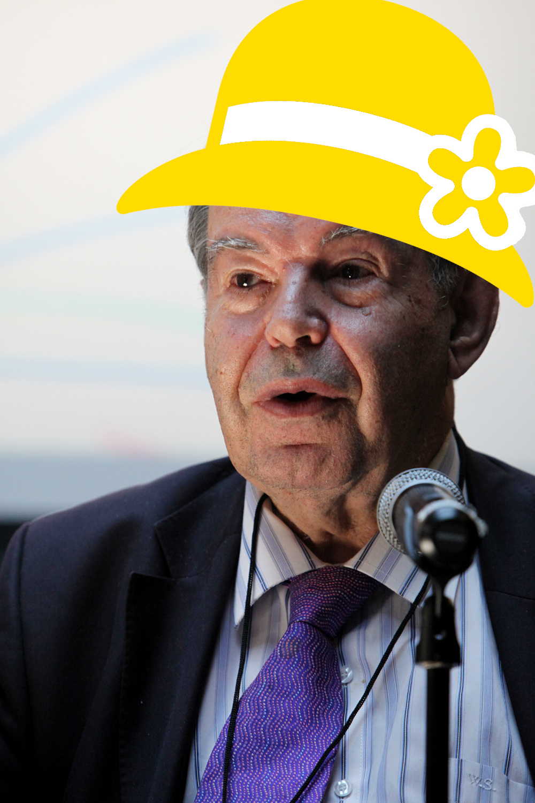
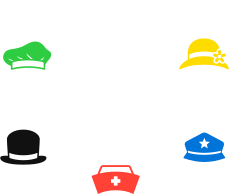

Six Thinking Hats
Skillshare, Sep 2019
Edward de Bono
The problem
The solution
Important!
White hat
Facts & objectivity
Red hat
Emotions & intuition
Black hat
Critical thinking & risk assessment
Yellow hat
Constructive thinking & positivity
Green hat
Creative thinking & possibilities
Blue hat
Thinking about thinking: goals, conclusions, order
Some notes
- Refer to hats by colour
- It's a game; rules are fun
- Anyone can suggest changing hats
Let's give it a go
Six Hats the venue for Skillshare
